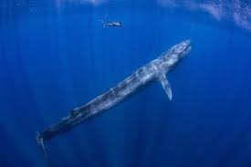
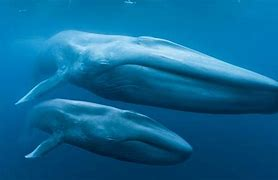
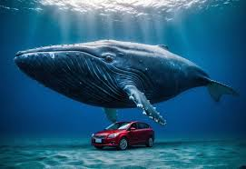

Biggest Whales in the Oceans Today
Whales, the majestic giants of the ocean, are not just the largest creatures to ever roam the planet—they are living wonders of the natural world. From the powerful humpback to the awe-inspiring blue whale, these ocean giants inspire curiosity, wonder, and respect. Their sheer size, intelligence, and grace make them an unforgettable symbol of the beauty and mystery of the seas.
Among all whales, none are more impressive than the blue whale. Growing up to 100 feet long and weighing as much as 200 tons, the blue whale is the largest animal that has ever existed—larger than any dinosaur, land mammal, or prehistoric creature. Yet, despite their enormous size, these gentle giants feed on some of the smallest creatures in the ocean—tiny shrimp-like animals called krill. This unique feeding strategy is just one of the many astonishing features of these magnificent animals.
One of the most captivating aspects of whales is their ability to communicate across vast distances. Whale songs, low-frequency vocalizations that can travel for miles underwater, are believed to play a vital role in their social interactions. Each species has its own distinct "song," and the mesmerizing sounds they produce echo through the deep blue, creating an underwater symphony that connects the oceans in ways we are still learning to understand.
Whales are not just awe-inspiring because of their size—they are also integral to maintaining the health of marine ecosystems. Through their feeding and migration patterns, whales contribute to the regulation of the food chain and the distribution of nutrients. Their existence helps maintain a balance in the ocean, making them essential to the wellbeing of the seas and the countless species that rely on it for survival.
Despite their incredible size and strength, whales face numerous threats. From commercial whaling in the past to modern-day challenges like ship strikes and climate change, these majestic creatures are under constant pressure. Today, dedicated conservation efforts are focused on protecting whales and ensuring their populations remain stable for generations to come. By supporting these efforts, we help preserve not just these magnificent creatures, but the health of the oceans themselves.